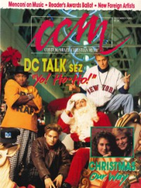

CMnexus
:
Contemporary Christian culture, music, and media.
Magazines
Profiles
Dove Awards
cmnexus.org
CM
nexus
→
Profiles
→
B
→
Bruce A. Brown
Bruce A. Brown
Writing Credits: 5 of 14
< -- Previous
Next -- >
1
2
3
4
5
6
7
8
9
10
Writing credits listing
Win 1989 in
Harvest Rock Syndicate
4.4
2nd Chapter of Acts
-
With Footnotes/In the Volume of the Book
Matthew Ward
-
Toward Eternity [reissue]
,
The Roar of Love [reissue]
Jan 1990 in
CCM
12.7
Riki Michele
-
Big Big Town
The Alarm
-
Change
Pierce Pettis
-
While the Serpent Lies Sleeping
Feb 1990 in
CCM
12.8
"One of Several Possible Musicks"
Kerry Livgren
David Meece
-
Learning to Trust
James Ward
-
Blue Believer
Mar 1990 in
CCM
12.9
D-Boy Rodriguez
-
Plantin' A Seed
Apr 1990 in
CCM
12.10
Jeff Johnson
-
Similitudes
Spr 1990 in
Harvest Rock Syndicate
5.1
The Swoon
-
The Swoon
"Harvest Rock Syndicate's Best of the '80s: A Decade of Christian Rock"
best of list, albums reviewed
May 1990 in
CCM
12.11
Rick Elias
-
Rick Elias and the Confessions
Michael Gleason
-
Children of Choices
Jun 1990 in
CCM
12.12
Mark Heard
-
Dry Bones Dance
Crumbächer
-
Worlds Away
Jul 1990 in
CCM
13.1
The Winans
-
Return
Sum 1990 in
Harvest Rock Syndicate
5.2
"The Discipline of the Young & The Strong"
Holy Soldier
"A Confession of Love"
Rick Elias
Bruce Cockburn
-
Live
Van Morrison
-
The Best of Van Morrison
Aug 1990 in
CCM
13.2
One Bad Pig
-
Swine Flew
Crystal Lewis
-
Let Love In
Halo
-
Halo
The 77s
,
Michael Roe
-
More Miserable Than You'll Ever Be
Sep 1990 in
CCM
13.3
Mike Stand
-
Simple Expression
Oct 1990 in
CCM
13.4
Steve Scott
-
Magnificent Obsession
Wes King
-
The Ultimate Underlying No Denying Motivation
Walk On Water
-
Walk On Water
Mad at the World
-
Seasons of Love
Jacob's Trouble
-
Knock, Breathe, Shine
Fall 1990 in
Harvest Rock Syndicate
5.3
Hothouse Flowers
-
Home
-
Bruce Cockburn
Catalog reissues
"X-Sinner Get It On For Christ"
X-Sinner
various artists -
Nobody's Child
Nov 1990 in
CCM
13.5
Michael W. Smith
-
Go West Young Man
The Allies
-
The River
Eddie DeGarmo
-
Phase 2
Terry Scott Taylor
-
Miracle Faith Telethon of Love
Randy Stonehill
-
One Night In Twenty Years [video]

Dec 1990 in
CCM
13.6
"Def, Not Dumb"
dc Talk
,
D-Boy Rodriguez
"New Bands From Foreign Shores"
Vincent
,
Edin-Ådahl
,
Walk On Water
,
Iona
Jan 1991 in
CCM
13.7
Steven Curtis Chapman
-
For The Sake of the Call
Petra
-
War And Remembrance
Jan 1991 in
Harvest Rock Syndicate
6.1
The Byrds
-
The Byrds
The Throes
-
All The Flowers Growing In Your Mother's Eyes
Paul Clark
-
Minstrel's Voyage, Vol. 1: 1970-1974
,
Minstrel's Voyage, Vol. 2
,
Minstrel's Voyage, Vol. 3: 1980-1985
Feb 1991 in
CCM
13.8
"Songs From the Milky Way"
The Throes
The Stand
-
Heartbreak Town
Mar 1991 in
CCM
13.9
Susan Ashton
-
Wakened by The Wind
Writing Credits: 5 of 14
< -- Previous
Next -- >
1
2
3
4
5
6
7
8
9
10
CMnexus
(noun)
The magazine index
of modern music
and Christianity
© 2011 CMnexus. Last updated April 2021.
Contact:
Rants and other correspondence to:
editor -AT- cmnexus
-DØT- org
About